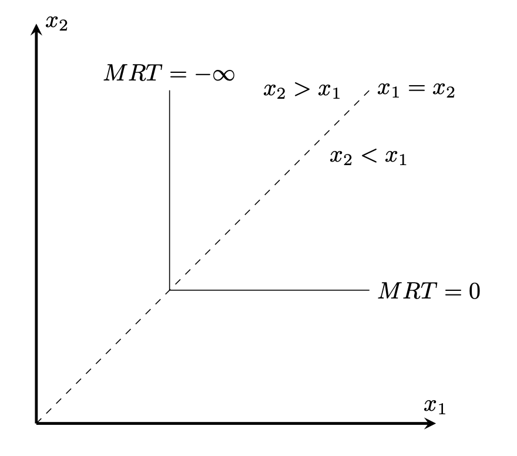

経済学で出る数学
ワークブックでじっくり攻める：応用問題
Cobb-Douglus関数とCES関数の限界代替率（marginal rate of substitute）
関数$f(x_1,x_2)$に対し，等高線$f(x_1,x_2)=c$を考える．
両辺を$x_1$で微分すると，
\[
\dfrac{\partial f}{\partial x_1}+\dfrac{\partial f}{\partial x_2}\dfrac{x_2}{x_1}=0
\]
となる．従って
\[
MRS=\dfrac{x_2}{x_1}=-\dfrac{\dfrac{\partial f}{\partial x_1}}{\dfrac{\partial f}{\partial x_2}}
\]
を限界代替率（marginal rate of substitute）という．
【問】
(1) CES関数，
\[
f(x_1,x_2)=({\alpha}_1x_1^{\rho}+{\alpha}_2x_2^{\rho})^{\frac{1}{{\rho}}}
\]
に対して限界代替率を求めなさい．
(2) Cobb-Douglus関数
\[
f(x_1,x_2)=x_1^{{\alpha}}x_2^{1-{\alpha}}
\]
に対して限界代替率を求めなさい．
【解答】
(1) $f(x_1,x_2)=({\alpha}_1x_1^{\rho}+{\alpha}_2x_2^{\rho})^{\frac{1}{{\rho}}}$に対して，
\begin{align*}
\dfrac{\partial f}{\partial x_1}&={\alpha}_1{\rho}x_1^{{\rho}-1}({\alpha}_1x_1^{\rho}+{\alpha}_2x_2^{\rho})^{\frac{1}{{\rho}}-1}\\
\dfrac{\partial f}{\partial x_2}&={\alpha}_2{\rho}x_2^{{\rho}-1}({\alpha}_1x_1^{\rho}+{\alpha}_2x_2^{\rho})^{\frac{1}{{\rho}}-1}
\end{align*}
なので，
\[
MRS=-\dfrac{{\alpha}_1}{{\alpha}_2}\Bigl(\dfrac{x_1}{x_2}\Bigr)^{{\rho}-1}.
\]
(2) $f(x_1,x_2)=x_1^{{\alpha}}x_2^{1-{\alpha}}$に対して，
\begin{align*}
\dfrac{\partial f}{\partial x_1}&={\alpha}x_1^{{\alpha}-1}x_2^{1-{\alpha}}\\
\dfrac{\partial f}{\partial x_2}&=(1-{\alpha})x_1^{{\alpha}}x_2^{-{\alpha}}
\end{align*}
なので，
\[
MRS=-\dfrac{{\alpha}}{1-{\alpha}}\dfrac{x_2}{x_1}.
\]
【解答終】
【問】
(3) CES関数の限界代替率で${\rho}=0$としなさい．
(4) CES関数の限界代替率で${\rho}\to -\infty$としなさい．
【解答】
(3)${\rho}=0$を代入すると，
\[
MRS=-\dfrac{{\alpha}_1}{{\alpha}_2}\Bigl(\dfrac{x_1}{x_2}\Bigr)^{-1}=-\dfrac{{\alpha}_1}{{\alpha}_2}\dfrac{x_2}{x_1}
\]
となり，Cobb-Douglus関数のMRSとなる．
(4)
\[
\lim_{{\rho}\to -\infty}-\dfrac{{\alpha}_1}{{\alpha}_2}\Bigl(\dfrac{x_1}{x_2}\Bigr)^{{\rho}-1}
\]
$-({\rho}-1)=r$とすると，${\rho}\to -\infty$のとき，$r\to \infty$で
\begin{align*}
\lim_{{\rho}\to -\infty}-\dfrac{{\alpha}_1}{{\alpha}_2}\Bigl(\dfrac{x_1}{x_2}\Bigr)^{{\rho}-1}&=\lim_{{r}\to \infty}-\dfrac{{\alpha}_1}{{\alpha}_2}\Bigl(\dfrac{x_2}{x_1}\Bigr)^r\\
&=\begin{cases}
-\infty , & \text{if} \quad x_2>x_1\\
0, & \text{if} \quad x_2 < x_1.
\end{cases}
\end{align*}

【解答終】
【メモ】
CES関数の極限とLeontief関数参照
【メモ終】
【Further Reading】
Hal R. Varian ‘Microeconomic Analysis; Third Edition,’ W.W.Norton & Company (1992)
ふろく（２）応用問題 一覧へ